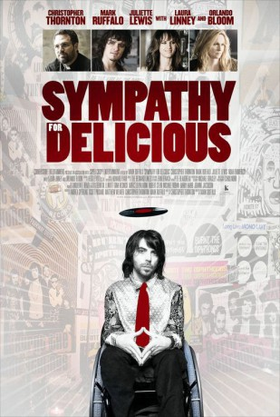

#5358 Sympathy for Delicious
 
 IMDB-Wertung: 5.8 / 10
IMDB-Wertung: 5.8 / 10  Metascore: 0
Metascore: 0 
Dean O'Dwyer, also known as ""Delicious D," is an up-and-coming DJ on the underground music scene in Los Angeles. When a motorcycle accident leaves Dean paralyzed, he abandons his turntables for a wheelchair as his once promising career disappears before his eyes. Forced to live out of his car on skid row, Dean begins his descent into depression when he meets Father Joe Roselli, a passionate young priest. Father Joe introduces Dean to the world of faith-healing, an unlikely way for him to begin his quest to walk again. He soon discovers that he possesses the otherworldly power to heal people, but in an odd twist of fate, he is utterly unable to heal himself. Despite Father Joe's warnings, Dean angrily decides to use his newfound gift for fame and fortune. He joins a rock band led by charismatic front man The Stain with bassist Ariel, and manager Nina Hogue. But his newfound notoriety is unable to cure the hurt that encompasses his life. To find true healing, Dean must ultimately ...
Jahr: 2010
Dauer: 101 Minuten
FSK: 12
Land: USA Studio: Maya EntertainmentTonspuren: DTS - ,
Untertitel:
Auflösung: 1080p (1920x808) Größe: 5806 MB
Genre: Drama
Regisseur: Mark Ruffalo
Drehbuch: Ian Brennan
Soundtrack:
Darsteller:
- Christopher Thornton als Dean O'Dwyer
 Mark Ruffalo als Father Joe
Mark Ruffalo als Father Joe Juliette Lewis als Ariel Lee
Juliette Lewis als Ariel Lee Laura Linney als Nina Hogue
Laura Linney als Nina Hogue Orlando Bloom als The Stain
Orlando Bloom als The Stain Noah Emmerich als Rene Faubacher
Noah Emmerich als Rene Faubacher James Karen als Father Rohn
James Karen als Father Rohn John Carroll Lynch als Evangelist Carroll
John Carroll Lynch als Evangelist Carroll Robert Wisdom als Prendell
Robert Wisdom als Prendell Dov Tiefenbach als Oogie
Dov Tiefenbach als Oogie Niko Nicotera als Rasha
Niko Nicotera als Rasha- Deantoni Parks als Chuck
 Stephen Mendillo als Angry Drunk Harv
Stephen Mendillo als Angry Drunk Harv- Sandra Seacat als Mrs. Matilda
- Nathan Wetherington als Bartender
- Michael Anthony Spady als Mute Brute
- Lydia Blanco Garza als Boy's Mother
 Hiep Thi Le als Female Voluteer
Hiep Thi Le als Female Voluteer- Louis Mendoza als Maria Leceta
- Shaun Duke als Dr. Zaheedi
- Mariko Denda als Young Chinese Girl
- Milissa Sears als Fan #3
 Tonita Castro als Desperate Mexican Woman
Tonita Castro als Desperate Mexican Woman- Willie Macc als Willie the Shill
- Marnie Alexenburg als Paramedic #1
- Rick Peters als Prosecuting Attorney Peters
 Valeri Ross als Judge
Valeri Ross als Judge- Owen Conway als Counter Guy
 Brian Goodman als C.O. Jacko
Brian Goodman als C.O. Jacko- Bradley Wayne James als DJ Maestro Sonica
- Allie Smith als Rene's Wife
 Don Abernathy als Pedestrian , uncredited
Don Abernathy als Pedestrian , uncredited- Ray Auxias als Jamal - Guy Who Jumps on Stage , uncredited
 Bambadjan Bamba als Guy in First Row , uncredited
Bambadjan Bamba als Guy in First Row , uncredited- Kelli Barksdale als Teddy Bear Girl , uncredited
- Karen Jin Beck als DJ Shy , uncredited
- Mariano Bigdawg als Security Doorman , uncredited
- Taylor Cardace als Groupie , uncredited
- Vernon Courteaux als Stage Rusher Rock Fan , uncredited
- JoiRani Dreemz als Rock Girl , uncredited
 Larry Eudene als Wheel Chair Racer , uncredited
Larry Eudene als Wheel Chair Racer , uncredited- Elaine Anne Furst als Nurse , uncredited
 Jerald Garner als News Photographer , uncredited
Jerald Garner als News Photographer , uncredited- Toni Habib als Jury Foreperson , uncredited
- Jawara als 'Delicious' Deans Security #1 , uncredited
- Anthony Jennings als Amputee , uncredited
 Jeffrey James Lippold als Bouncer , uncredited
Jeffrey James Lippold als Bouncer , uncredited- Bryan McCoy als Healed Rocker , uncredited
- Tina Morasco als Newscaster , uncredited
- Martin Santander als Bouncer , uncredited
Datei: X:\2010(N-Z)\Sympathy for Delicious (2010, FSK12, 1920x808).mkv seit 17.01.2017
Festplatte: HD 2010(G-Z)-2011(A-F)
 Es gibt insgesamt 115 Filme in der Gruppe '2010(N-Z)'
Es gibt insgesamt 115 Filme in der Gruppe '2010(N-Z)'